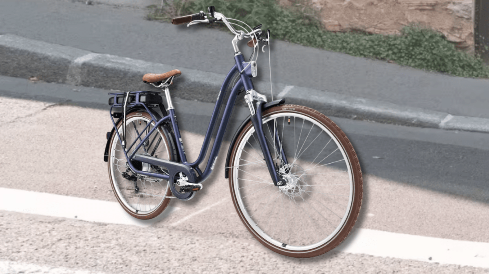

Le vélo de ville électrique Decathlon Elops 900 E est beau, et en promo de 300 €

🛒 En lien avec cet article
🛒 Voir le prix : Decathlon elops 900
Publicité — Liens de partenariat Amazon : une commission peut être reversée, sans surcoût pour vous.
L'actualité tech ne cesse d'évoluer. Nouveaux produits, acquisitions, découvertes : chaque jour apporte son lot d'informations importantes pour comprendre le monde numérique de demain.
Ce qu'il faut retenir
[Deal du jour] L’Elops 900 E de Decathlon est un vélo à assistance électrique idéal pour la ville, confortable, et qui a vraiment un bon style.
Il profite en ce moment de 300 € de réduction chez Decathlon.
Pourquoi c'est important
Cette information pourrait avoir des répercussions sur tout le secteur technologique. Elle concerne directement les utilisateurs de technologies numériques et mérite d'être suivie de près dans les prochaines semaines. Le vélo de ville électrique Decathlon Elops 900 E est beau, et en promo de 300 € est ainsi un signal à prendre en compte pour comprendre les évolutions du secteur.
En résumé
Retenez l'essentiel : Le vélo de ville électrique Decathlon Elops 900 E est beau, et en promo de 300 €. Cette actualité a été rapportée par Numerama. Nous continuerons de suivre ce sujet et de vous tenir informés des prochaines évolutions.
Source : Numerama